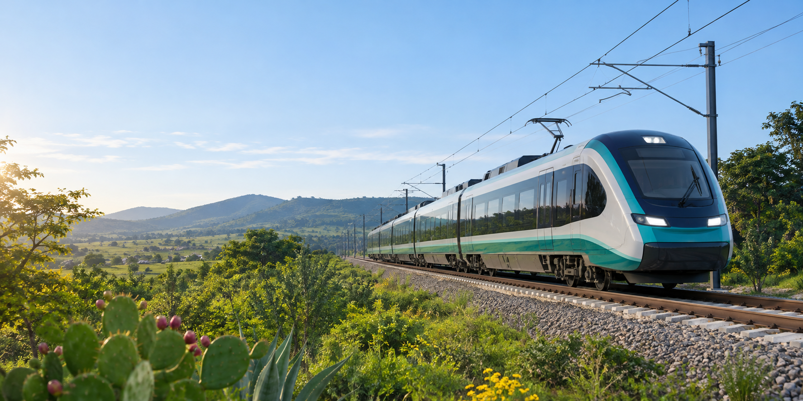
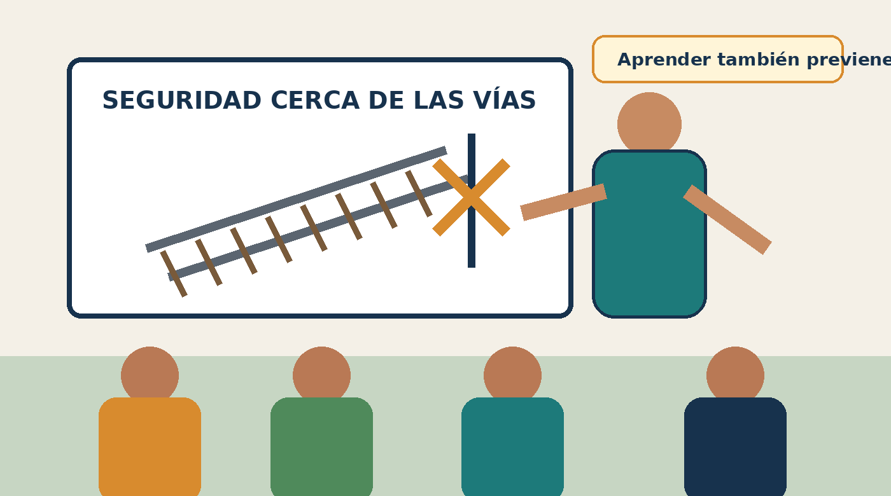
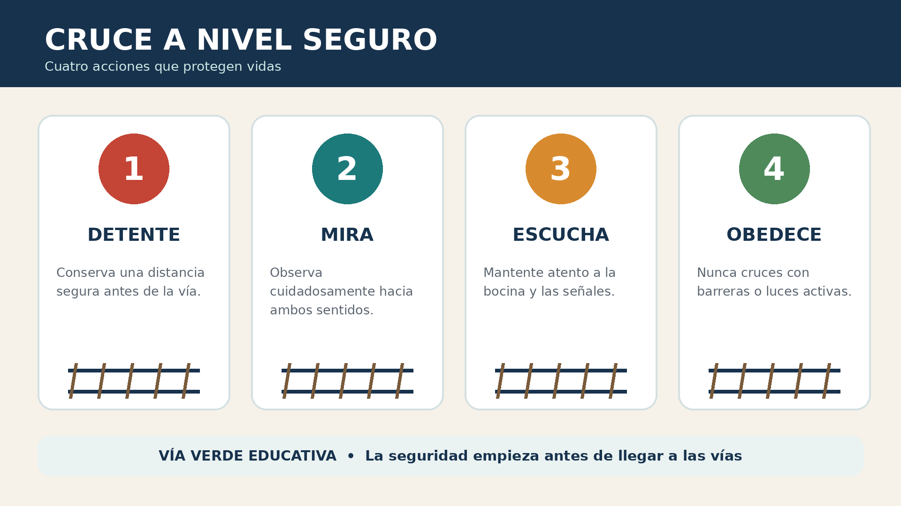
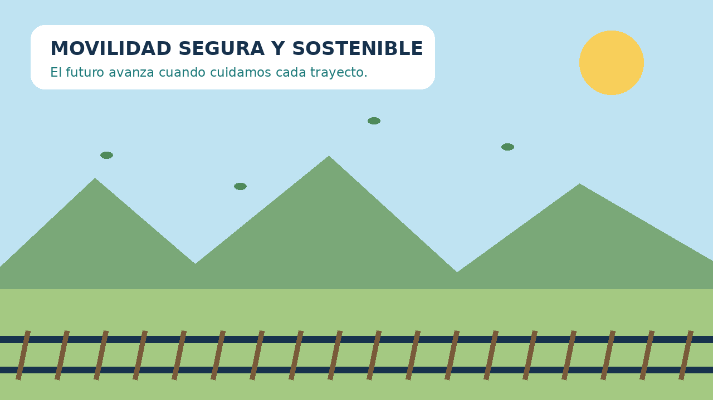

Seguridad ferroviaria
Reconoce señales, evita conductas de riesgo y aprende cómo actuar cerca de un cruce a nivel.
Ver video educativo
Movilidad segura · futuro sostenible
Información y recursos multimedia para comunidades que conviven con la infraestructura ferroviaria.
Quiénes somos
Vía Verde Educativa es una asociación civil ficticia dedicada a compartir información clara para fomentar una movilidad segura, sostenible e incluyente.
Nuestro trabajo acerca contenidos visuales, sonoros y audiovisuales a estudiantes, familias, docentes y comunidades próximas a las vías.
Programas
Cada programa combina materiales breves, actividades y recursos que pueden utilizarse en casa o en el aula.
Reconoce señales, evita conductas de riesgo y aprende cómo actuar cerca de un cruce a nivel.
Ver video educativoExplora cómo el transporte ferroviario puede contribuir a ciudades más eficientes y conectadas.
Ver animaciónEncuentra actividades para conversar, enseñar y fortalecer la prevención con tu comunidad.
Conocer actividadesContenido multimedia
En un cruce ferroviario, unos segundos de atención pueden hacer la diferencia.
Al acercarte a un cruce ferroviario, reduce la velocidad y detente. Observa hacia ambos lados y escucha las señales. Nunca cruces si las luces están activas o la barrera está bajando. Espera a que el tren pase por completo y confirma que no se aproxima otro. Cruza solamente cuando sea seguro.
Galería educativa
Material visual creado para explicar la prevención y la participación comunitaria.



Pausa sonora
Una pieza de audio original para acompañar el recorrido y reforzar el mensaje de movilidad responsable.
Paisaje sonoro ambiental de 45 segundos inspirado en naturaleza, movimiento y transporte sostenible. No contiene narración.
Recursos
Descarga los recursos originales del proyecto y utilízalos con fines educativos.
Contacto
¿Quieres llevar un taller a tu escuela o comunidad? Escríbenos y conversemos.